Êtes-vous totalement débutant dans la crypto et vous demandez-vous comment acheter votre premier USDT pour commencer à trader ? Dans cette vidéo, je vais vous guider à travers tout le processus étape par étape, depuis la création de votre compte sur Kraken, l'achat d'USDT avec des euros ou des dollars, puis le transfert de ces fonds vers Weeks, où vous placerez votre tout premier trade, dans un environnement très adapté aux débutants. Et ne vous inquiétez pas, je ferai en sorte que ce soit facile à suivre, que vous soyez sur votre téléphone ou votre ordinateur. Tous les liens dont vous avez besoin se trouvent dans la description, y compris mes liens de parrainage pour Kraken et Weeks. Ceux-ci vous donnent des bonus exclusifs et des réductions sur les frais,
Interface & Outils : Échange de cryptomonnaies WEEX (interface web de trading spot).
Contenu textuel & Code : Liste des cryptos (ETC, TRX, XRP, SOL, BNB, etc.), carnet d'ordres pour la paire BTC/USDT, graphiques de prix avec indicateur Volume SMA 9, options d'ordres Limit et Market.
Action / Démonstration : Navigation et présentation de l'interface de l'échange WEEX pour passer un ordre d'achat/vente sur le marché spot.
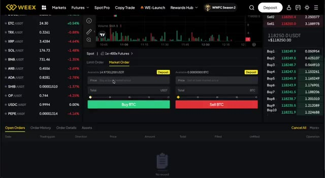
🔍 Agrandirdonc assurez-vous de les utiliser lors de votre inscription. Commençons. Première étape, nous devons créer votre compte Kraken. Rendez-vous sur kraken.com ou cliquez sur le premier lien dans la description. Vous arriverez soit sur leur site Web, soit vous serez redirigé vers l'App Store ou Google Play si vous êtes sur mobile. Kraken est l'un des échanges de crypto les plus fiables et les plus largement disponibles au monde. Il est entièrement réglementé, ce qui est particulièrement important si c'est la première fois que vous avez affaire à des cryptos. Une fois que vous y êtes, cliquez sur s'inscrire, entrez votre adresse e-mail, choisissez un mot de passe fort et, plus important encore, sélectionnez votre pays de résidence. Celui-ci sera utilisé plus tard pour l'identification
Interface & Outils : Site web de Kraken (kraken.com)
Contenu textuel & Code : Formulaire d'inscription avec champs pour l'e-mail, le mot de passe, le pays de résidence (France), l'option de code d'invitation et les cases à cocher pour les conditions d'utilisation.
Action / Démonstration : Présentation de la première étape pour créer un compte Kraken.
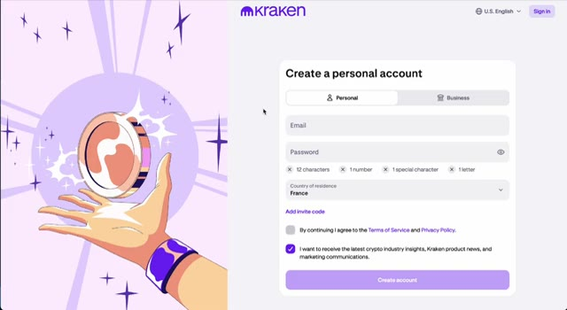
🔍 Agrandirvérification. Ensuite, rendez-vous simplement dans votre boîte de réception et confirmez votre e-mail pour continuer. Avant de pouvoir déposer ou acheter quoi que ce soit, Kraken vous demandera de vérifier votre identité. C'est une exigence standard pour toute plateforme d'échange réglementée. Le processus est super rapide. Il vous suffit d'entrer quelques informations personnelles, de télécharger une photo de votre pièce d'identité ou de votre passeport, et de prendre un petit selfie si nécessaire. C'est tout. Dans la plupart des cas, votre compte sera vérifié en quelques minutes seulement. Et une fois que ce sera fait, vous serez prêt à approvisionner votre compte. Votre compte étant vérifié, ajoutons maintenant un peu d'argent pour que vous puissiez acheter vos premières cryptos.
Interface & Outils : Site web / Plateforme d'échange Kraken
Contenu textuel & Code : Section « Verification » avec le statut indiqué comme vérifié (« Verified »), ainsi que les préférences du compte (langue, devise en Euro, fuseau horaire).
Action / Démonstration : Consultation et présentation de la section de vérification d'identité et des paramètres du compte Kraken.
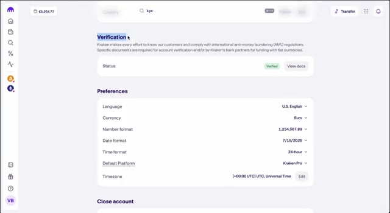
🔍 AgrandirCliquez sur l'onglet du portefeuille, puis appuyez sur dépôt. Kraken prend en charge plusieurs devises comme les euros, l'USD, et plus encore. Vous pourrez choisir votre devise locale et Kraken vous montrera toutes les méthodes de dépôt disponibles. En Europe, l'option la moins chère et la plus fiable est un virement bancaire SEPA. Ailleurs, vous pourriez voir SWIFT ou d'autres options locales selon votre pays. Kraken fournira les coordonnées bancaires exactes. Suivez simplement les instructions et effectuez le virement depuis votre application bancaire. Petit conseil, évitez d'utiliser les cartes de crédit ou PayPal car les frais sont généralement beaucoup plus élevés.
Interface & Outils : Échange de cryptomonnaies Kraken (interface web).
Contenu textuel & Code : Liste des monnaies fiat avec leurs soldes respectifs à zéro et une barre de recherche.
Action / Démonstration : Sélection de la devise de dépôt (US Dollar) par le curseur de la souris.
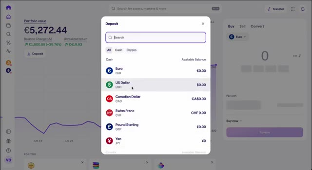
🔍 AgrandirUne fois votre virement reçu, votre solde apparaîtra sur votre compte Kraken et vous êtes maintenant prêt à acheter des USDT. Maintenant que vos fonds sont arrivés, il est temps d'acheter vos premiers USDT, le stablecoin que vous utiliserez pour trader sur les semaines à venir. Voici comment faire. Allez dans l'onglet Acheter, Vendre ou Convertir sur Kraken.
Interface & Outils : Échange de cryptomonnaies (Kraken)
Contenu textuel & Code : Valeur du portefeuille affichée à 5 272,44 €, graphique d'évolution sur un mois et module d'achat ("Buy, Sell, Convert") avec sélection de devise (Euro).
Action / Démonstration : Consultation du solde du compte et préparation de l'achat d'USDT après réception du virement.
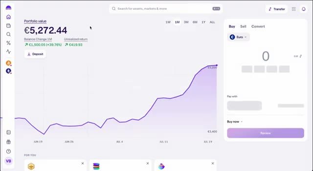
🔍 AgrandirSélectionnez votre devise, comme l'euro ou l'USD, et choisissez l'USDT comme la cryptomonnaie que vous souhaitez acheter. Ensuite, entrez simplement le montant, par exemple 50 ou 100 euros, et cliquez sur vérifier, puis confirmez. C'est un processus ultra rapide et adapté aux débutants. Et c'est aussi simple que ça, vous possédez désormais des USDT.
Interface & Outils : Plateforme d'échange de cryptomonnaies (interface web type exchange).
Contenu textuel & Code : Valeur du portefeuille à 5,270.86 €, graphique de performance sur 1 mois montrant une tendance haussière, menu d'achat rapide (Buy/Sell/Convert).
Action / Démonstration : Sélection de l'USDT dans la liste des cryptomonnaies pour préparer un achat.
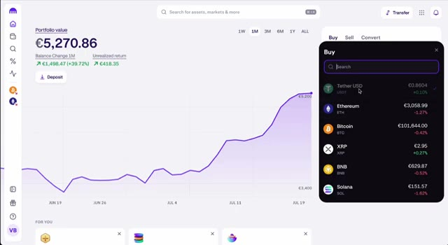
🔍 Agrandir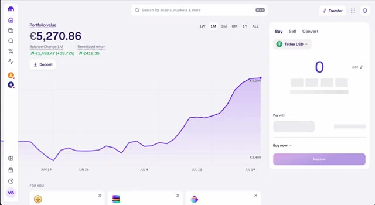
🔍 AgrandirMaintenant, oui, la fonction d'achat instantané de Kraken facture des frais légèrement plus élevés, mais ne vous inquiétez pas. À l'étape suivante, je vais vous montrer comment envoyer vos USDT vers Weeks, où vous pourrez trader avec des frais beaucoup plus bas et utiliser une interface claire et intuitive qui est parfaite pour les débutants. Maintenant que vous avez vos USDT, nous allons les transférer vers Weeks, un exchange puissant et adapté aux débutants pour le trading de cryptos.
Interface & Outils : Kraken, WEEX
Contenu textuel & Code : Valeur du portefeuille en euros, graphique de performance sur 1 mois, formulaire d'achat de Tether USD (USDT), bannières promotionnelles pour la compétition WEEX Team Battle avec un prize pool de 900 000 $.
Action / Démonstration : Présentation de l'interface d'achat instantané de crypto-monnaies sur Kraken, suivie d'une transition vers la plateforme de trading WEEX et ses offres promotionnelles.
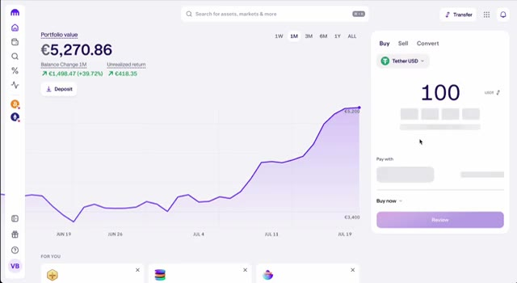
🔍 Agrandir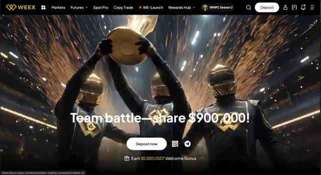
🔍 Agrandir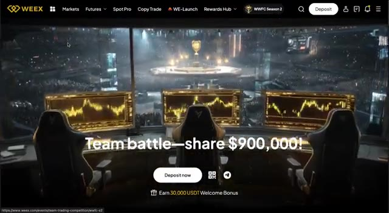
🔍 AgrandirÉtape 1. Créez votre compte Weeks en utilisant le deuxième lien dans la description. Cela vous donne accès à des bonus exclusifs, y compris une boîte mystère de 100 USDT lorsque vous déposez et tradez. Une fois votre compte Weeks prêt, cliquez sur Actifs, puis sur Dépôt, et sélectionnez USDT. USDT. Assurez-vous de choisir le bon réseau. Généralement, le TRC20 est le mieux car il est rapide et bon marché.
Interface & Outils : Site web de l'échangeur de cryptomonnaies WEEX (pages d'inscription, d'événements et de dépôt).
Contenu textuel & Code : Offres de bonus de bienvenue (boîte mystère de 100 USDT, bonus de 20%), options de dépôt de crypto (USDT, BTC, ETH) et interfaces de navigation.
Action / Démonstration : Navigation sur la plateforme WEEX, explication de la création de compte, des bonus et de la sélection de l'USDT pour effectuer un dépôt.
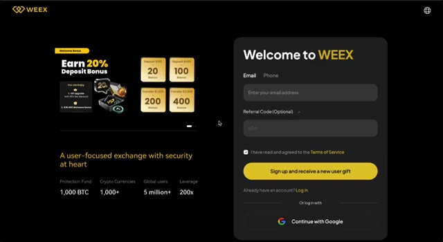
🔍 Agrandir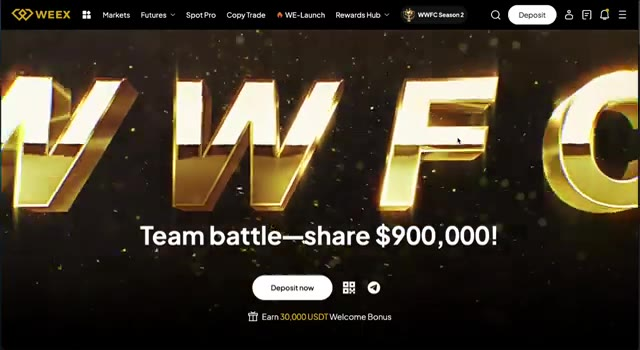
🔍 Agrandir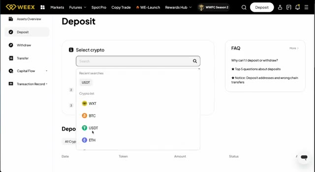
🔍 AgrandirCopiez l'adresse de dépôt. Maintenant, retournez sur Kraken, trouvez votre USDT dans votre portefeuille, cliquez sur retirer, et collez l'adresse de Weeks. Sélectionnez TRC20 comme réseau, entrez le montant et confirmez la transaction. Vos fonds devraient arriver sur Weeks d'ici quelques minutes.
Interface & Outils : Interface utilisateur de l'échange de cryptomonnaies Kraken
Contenu textuel & Code : Solde du portefeuille (€5,270.86), options d'achat/vente/convert, et liste des réseaux de blockchain disponibles pour les retraits d'USDT.
Action / Démonstration : Navigation sur Kraken pour préparer le retrait d'USDT et sélection du réseau de transfert.
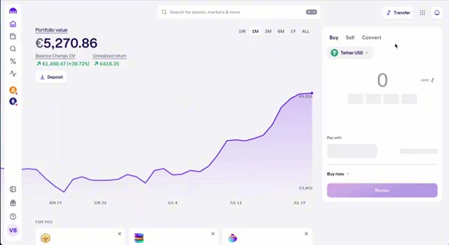
🔍 Agrandir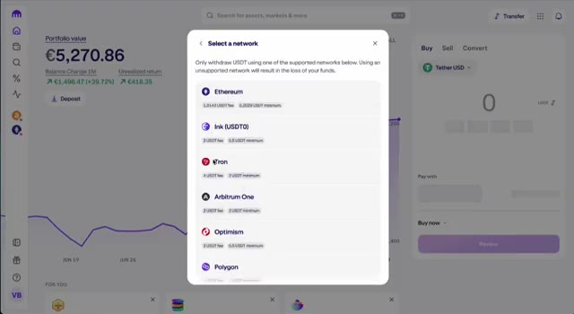
🔍 AgrandirMaintenant que votre USDT est arrivé, ouvrons votre tout premier trade. Allez sur l'onglet futures ou l'onglet spot sur Weeks, selon votre préférence. Pour les débutants, le spot est plus sûr. Recherchons une paire de trading, disons BTC USDT ou ETH USDT. Cliquez sur acheter, entrez le montant d' USDT que vous souhaitez utiliser, et confirmez. Félicitations, vous venez de passer votre premier trade. Si vous souhaitez explorer du trading plus avancé comme les futures avec effet de levier, Weeks rend cela super simple avec une interface intuitive.
Interface & Outils : Interface web de la bourse de cryptomonnaies WEEX (onglets Markets, Futures, SpotPro, Copy Trade).
Contenu textuel & Code : Paire USDC/USDT sélectionnée, statistiques du marché en haut (24h high/low), carnet d'ordres (Order Book) à droite et options de passage d'ordre en bas (Limit Order, Market Order).
Action / Démonstration : Navigation sur l'interface de trading pour préparer l'ouverture d'un ordre d'achat.
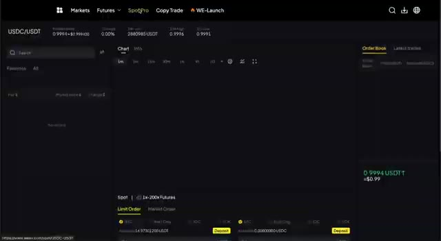
🔍 AgrandirN'en fais simplement pas trop. Commence doucement et assure-toi de comprendre les risques. Pour récapituler, tu as créé ton compte Kraken. Tu as un TOS dans ton identité. Tu peux déposer de l'argent fiduciaire Swin. Tu peux lier mon USDT fiduciaire. Tu peux écrire à Weeks. Tu peux réaliser ton tout premier trade. Tu possèdes désormais officiellement des cryptos et tu sais comment trader. Si ce guide t'a aidé, n'oublie pas d'utiliser les liens d'affiliation dans la description pour Kraken et Weeks. Cela soutient la chaîne et te donne accès à des bonus exclusifs. Si tu es prêt à passer au niveau supérieur, j'ai également fait des vidéos sur les stratégies de trading,
Interface & Outils : Kraken, WEEX Exchange, YouTube
Contenu textuel & Code : Statut de vérification du compte Kraken (Verified), carnets d'ordres WEEX, paires de trading spot (BTC/USDT, ETH/USDT, etc.)
Action / Démonstration : Navigation dans les paramètres de Kraken puis passage à l'interface de trading de WEEX.
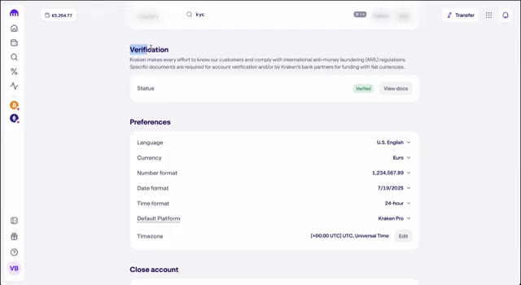
🔍 Agrandir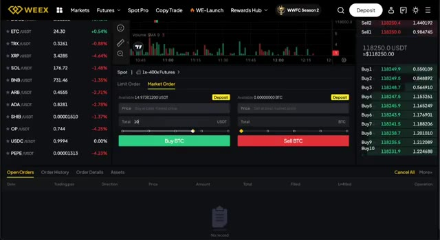
🔍 Agrandirles types d'ordres et la gestion des risques. Allez les voir ensuite. Merci d'avoir regardé, et je vous vois dans le prochain.
Interface & Outils : Interface web YouTube
Contenu textuel & Code : Miniatures de vidéos YouTube sur les cryptomonnaies et le trading (Bybit, Blofin, WEEX).
Action / Démonstration : Navigation sur l'interface principale de YouTube.